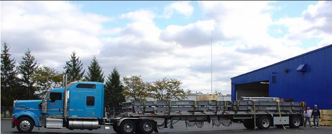
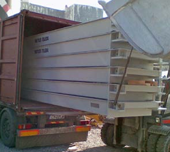
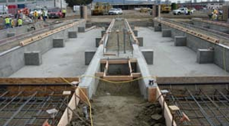
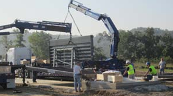
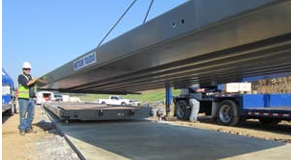
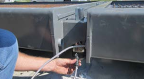
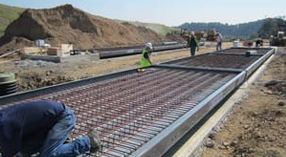
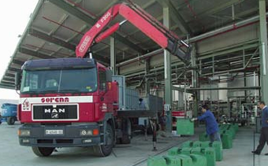
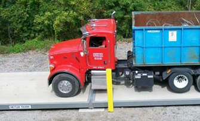

Menyiapkan dan menjalankan timbangan Anda
Setelah pondasi selesai dan telah mengeras (jika beton), timbangan dapat dipasang. Proses ini dapat mencakup aktivitas dari berbagai penyedia dalam waktu yang relatif singkat. Sebagian besar dapat dikoordinasikan oleh penyedia timbangan, tetapi pelanggan perlu terlibat erat untuk memberikan dukungan di lokasi. Mengetahui apa yang diharapkan dapat membantu Anda mengembangkan jadwal yang wajar untuk pemasangan.
Mengangkut modul jembatan timbang pada trailer datar merupakan hal yang umum di beberapa tempat, meskipun lebar modul dapat berarti bahwa truk memerlukan sebutan “beban berukuran besar”
Pengiriman dan Pemasangan
Beberapa produsen mengirimkan dan memasang timbangan dengan peralatan dan personel mereka sendiri. Produsen lain mengandalkan pihak ketiga, yang dapat berarti mengoordinasikan jadwal pengiriman, penyewaan derek, perusahaan beton, dll.
Modul skala biasanya tiba di truk gandeng setelah pondasi disiapkan. Dalam beberapa kasus, modul juga dapat diangkut dengan kereta api, atau bahkan kontainer kargo standar (berguna untuk beberapa lokasi terpencil). Derek kemudian digunakan untuk mengangkat modul dari kendaraan pengangkutnya ke pondasi skala.
Beberapa produsen dapat menawarkan timbangan yang dikemas dalam wadah untuk menyederhanakan pengangkutan timbangan ke jarak yang jauh, atau ke daerah terpencil.
Berikut ini adalah contoh garis waktu untuk pemasangan timbangan baru di lokasi yang belum dipersiapkan.
Persiapan pondasi: ~5 hari
• Penggalian
• Pembentukan pondasi dan tulangan
• Penuangan beton pondasi
Persiapan pondasi dapat dilakukan sebelum komponen skala tiba di lokasi
Perawatan beton pondasi: ~30 hari
Pengiriman skala: Waktu transportasi bergantung pada jarak antara pabrik skala dan lokasi pelanggan.
Instalasi: 1-3 hari
• Survei pondasi dan tandai untuk pemasangan pelat dasar
• Pasang pelat dasar dan perlengkapan pada pondasi
• Tempatkan modul jembatan timbang (memerlukan derek dan tali-temali)
• Sejajarkan dan ratakan
• Tempatkan Load Cells ke dalam timbangan, jalankan kabel dan tambahkan kotak sambungan (jika diperlukan)
• Sesuaikan sistem pemeriksaan atau suspensi untuk toleransi yang tepat
• Pasang terminal dan periferal atau perangkat lunak timbangan
Persiapan dek beton (tidak diperlukan untuk timbangan dek baja): ~30 hari
• Menuang beton ke dalam modul jembatan timbang (1 hari)
• Memproses beton (~30 hari)
Pengaturan dan kalibrasi: 1 hari
• Penyesuaian shift
• Kalibrasi
• Sertifikasi dengan departemen timbangan dan pengukuran setempat
Proyek pemasangan skala lengkap, termasuk persiapan dan perawatan pondasi, biasanya dapat diselesaikan dalam waktu 30-60 hari.
Truk pengiriman timbangan ini dilengkapi dengan derek di dalamnya yang digunakan untuk mengangkat dan menempatkan modul jembatan timbang ke dalam pondasi timbangan.
Modul jembatan timbang ditempatkan ke dalam pondasi.
Kabel Load Cells disalurkan melalui timbangan dan dipasang ke Load Cells.
Skala ini hampir siap untuk beton yang akan dituangkan ke dalam modul dek.
Pengujian dan Kalibrasi
Pengujian dan kalibrasi awal biasanya merupakan tanggung jawab produsen atau distributor. Prosedurnya cukup sederhana. Tim penguji menambahkan bobot tambahan hingga mencapai kapasitas timbangan, melakukan pembacaan setelah penambahan dan pengurangan setiap bobot. Pembacaan harus berada dalam toleransi yang telah ditetapkan sebelumnya. Jika tidak, timbangan dikalibrasi ulang dan pengujian dilakukan lagi. Siklus kalibrasi/pengujian berlanjut hingga timbangan bekerja sesuai spesifikasi.
Sebagian besar aplikasi yang sah untuk diperdagangkan mengharuskan timbangan untuk memperoleh sertifikasi kepatuhan dari otoritas timbangan dan ukuran setempat pada interval tertentu (tahunan, setengah tahunan, dst.). Mereka dapat menyaksikan atau berperan dalam kalibrasi awal. Sebagai pemilik timbangan, Anda harus memastikan bahwa pengujian awal ini dikoordinasikan dengan kunjungan inspeksi yang diwajibkan dari badan pengawas. Dengan demikian, Anda terhindar dari pengulangan pengujian jika seseorang yang perlu menyaksikan pengujian tidak diberi tahu.
Jenis prosedur pengujian/kalibrasi yang sama ini digunakan sepanjang masa pakai timbangan untuk kalibrasi dan sertifikasi ulang timbangan secara berkala. Prosedur tersebut dapat dilakukan oleh perusahaan yang menyediakan timbangan atau oleh pihak ketiga. Sebagian besar perusahaan yang menyediakan layanan pengujian standar memiliki kualifikasi untuk mengerjakan semua jenis timbangan kendaraan. Namun, tingkat layanan yang mereka berikan untuk perawatan dan perbaikan dapat bervariasi.
Persetujuan dan Sertifikasi
Setiap timbangan truk yang digunakan dalam transaksi komersial publik atau swasta harus diperiksa dan disertifikasi oleh departemen berat dan ukuran (W&M) regional dan/atau lokal Anda. Undang-undang setempat biasanya mengharuskan Anda dan/atau pemasok timbangan untuk memberi tahu departemen W&M saat timbangan baru dipasang. Hal itu mendorong pemeriksaan oleh pejabat departemen untuk memeriksa pemasangan dan menguji keakuratan timbangan. Biasanya, hal itu harus dilakukan sebelum timbangan dapat digunakan.
Banyak produsen yang desain timbangannya disertifikasi oleh NTEP, OIML, atau organisasi metrologi lainnya. Dalam beberapa kasus, membeli timbangan bersertifikat dapat menyederhanakan proses persetujuan Anda. Namun, beberapa otoritas negara bagian dan lokal memiliki proses sertifikasi mereka sendiri yang lebih ketat. Anda mungkin juga harus memenuhi persyaratan timbangan dari badan regulasi lain, tergantung pada lokasi dan bisnis yang Anda jalankan. Contohnya termasuk penegakan kode bangunan negara bagian dan lokal; Layanan Inspeksi Gandum Federal; dan departemen pertanian negara bagian dan federal, bea cukai, departemen transportasi, dan lainnya. Pemasok timbangan yang berpengalaman mengetahui badan mana yang berlaku untuk proyek Anda.
Perlu diingat juga bahwa timbangan mungkin perlu disertifikasi ulang setelah melakukan perbaikan atau mengganti komponen yang rusak. Misalnya, mengganti satu Load Cells dapat mengharuskan Anda membayar departemen W&M setempat untuk menguji dan mensertifikasi ulang timbangan Anda. Itu hanyalah salah satu dari banyak alasan untuk merawat timbangan Anda dengan benar dan membiasakan diri dengan layanan dan garansi timbangan.
